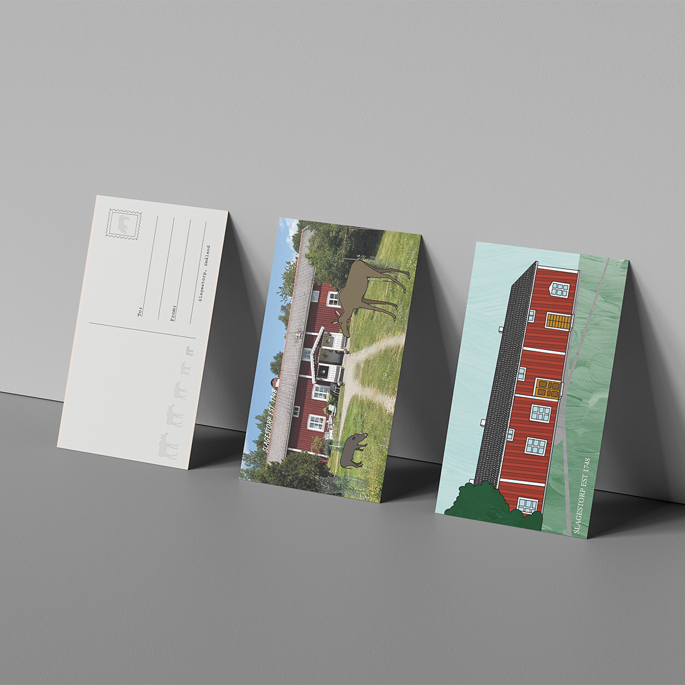
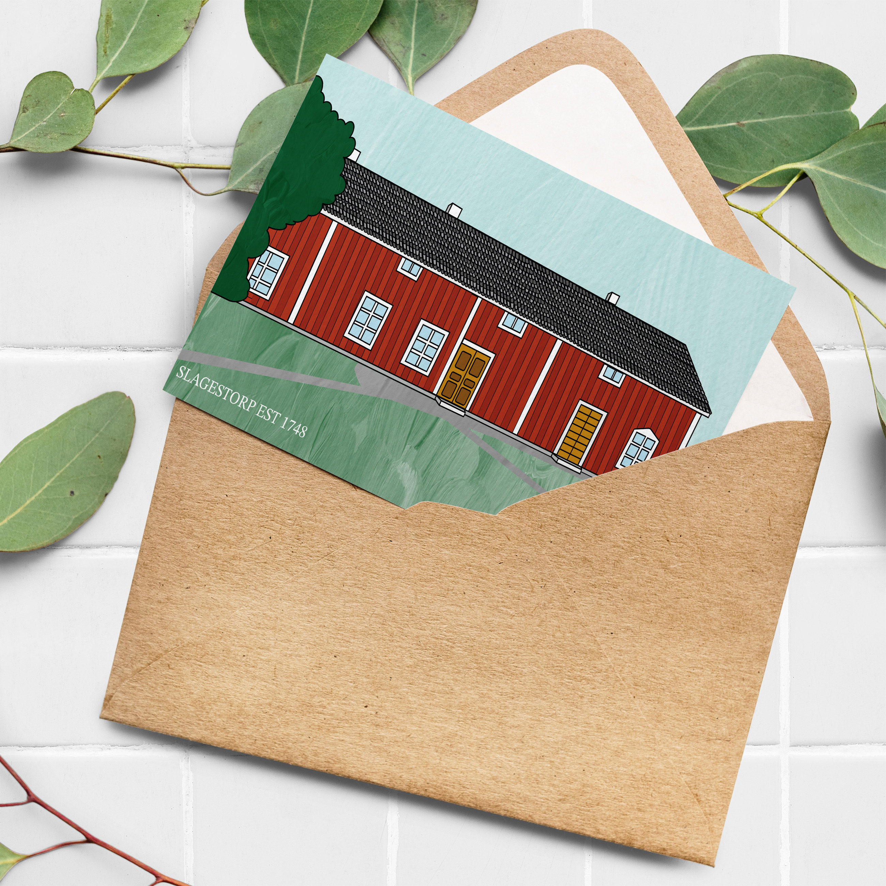
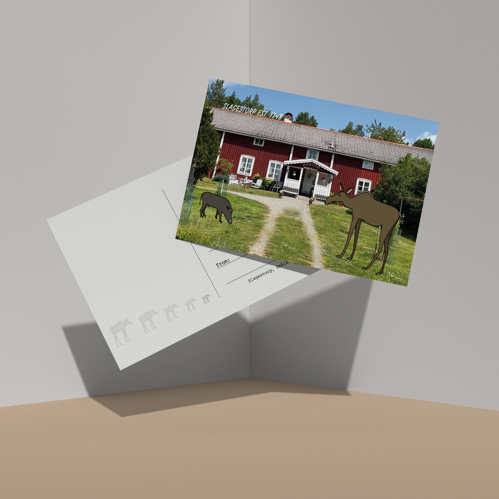
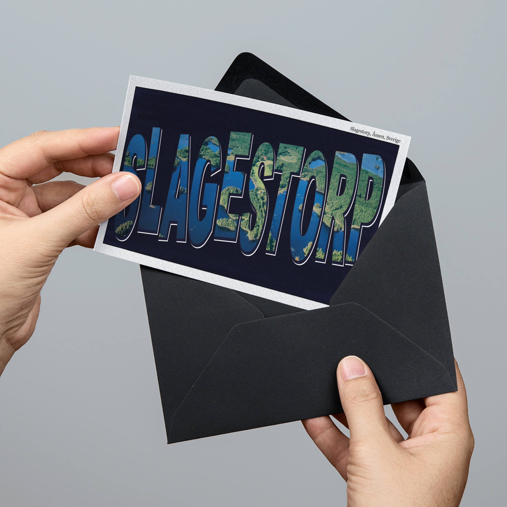
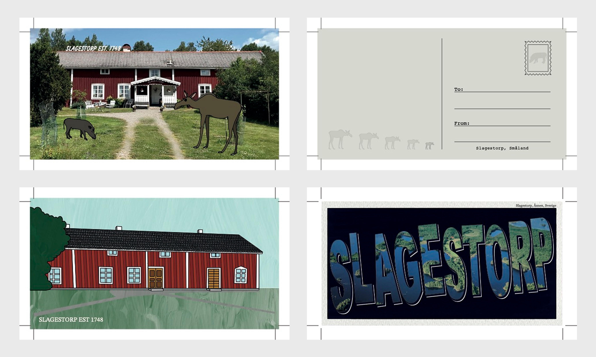

Summer postcards
Summery postcards inspired by country family house

Year
2026
Timeframe
1 Week
My Role
Solo designer
Tools
Photoshop
Illustrator
Project overview
Slagestorp is a set of three postcards designed for our ancestral home in Torne, on the border between Växjö and Alvesta. The house has been in the family for generations, and the postcards aim to capture its character and the summer memories tied to the place. Each card takes a distinct visual approach, typographic, illustrated, and a combination of photography and illustration, while a shared back design unifies the set.
All postcards were produced in CMYK at standard postcard dimensions, prepared for print as PDF files.



My design process
An overview of my design process

Research + Sketches
Research was built around finding visual references that matched the tone and character of each card. The typographic postcard drew inspiration from a hand-painted postcard from Portland, Maine, informing both the layered type treatment and color palette. The illustrated postcard was inspired by an old painting of the house itself and the watercolor-style illustrations of Elsakonst, a creator known for painting houses on commission. The photo and illustration postcard referenced animal illustration styles from Unsplash templates, while the shared back design was informed by a postcard featuring a similar combination of layout and animal motifs.


Wireframes + Iterations
Each postcard was developed individually, with the typographic card completed first. Iteration focused primarily on color, composition, and how well each design captured the intended feeling of the place rather than restructuring layouts. Key decisions included the use of masks to simulate brushstroke textures, separating illustration layers by depth to simplify the build process, and choosing typefaces that matched the tone of each card, from a lively sans-serif for the typographic postcard to a serif inspired by 18th century typography for the illustrated version.

Final Design
The final set consists of three postcards and a shared back design, each print-ready in CMYK at standard postcard dimensions with 3mm bleed and crop marks, exported as PDF files. The typographic card layers bold display type over a photographic background of Lake Åsnen, with an offset path effect giving the text depth. The illustrated card depicts the house in a flat vector style with color-shifted planks to add dimension. The third card combines an edited photograph of the house, retouched and AI-assisted, with vector animal illustrations. Despite their visual differences, the three cards feel cohesive through shared color sensibility and the unifying back design.
